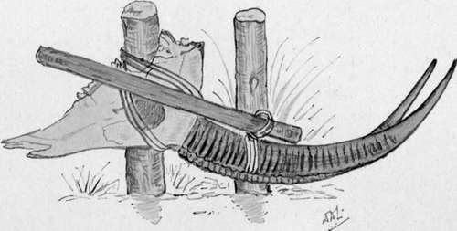

Various Subjects For The Sportsman And Naturalist. Part 2
Description
This section is from the book "Wild Life In Central Africa", by Denis D. Lyell. Also available from Amazon: Wild Life in Central Africa.
Various Subjects For The Sportsman And Naturalist. Part 2
Natives cannot skin properly without being taught, and it takes some time to make them proficient. Nothing is better for skinning than a sharp pocket-knife with two blades, one fairly large and the other small. A small hone is most useful for keeping the knife sharp, and, for larger knives, a piece of emery-stone is better than a hone. I do not recommend expensive cutler's "hunting" knives, for they are too thick, and the steel is too hard to sharpen on anything except a grindstone. The various implements sold for skinning usually turn out practically useless. For animals a strong pocket-knife and two or three soft-steel bladed knives, known as the " Bushman's Friend" or " Green River " pattern, are all that are necessary. For birds, a small pocket knife, a pair of scissors, and a brain-scoop will do the best of work.
Many good taxidermists sell preservatives of their own mixing, but, for the sportsman, the principal chemicals required will be alum, saltpetre, salt, and turpentine. For birds, arsenical soap is probably best, as it does not harden the thin skins and make them crack as alum will do; but it should be kept under lock and key, as it is dangerous stuff to leave lying about for native boys to tamper with.
The best way to clean skulls is by boiling them in a big pot, although some antelope horns will not come off the cores readily—such as hartebeest and eland—so care has to be taken, when boiling, to keep the horn substance above the water-line.
Roan Antelope Head ♂. Showing method of removing horns from cores.
Kudu and sable horns can be forced off the cores, after a week or two, by putting two short poles deeply in the ground, and tying the skull to one pole and a loop on the horns, so as to pass a strong stick through. This is then levered against the second pole, when the horn will usually leave the core and come away.
Fig. 2. Impala Head and Neck, Showing the Way to Take Headskin.
A—Cut round neck close to shoulder. B—Cut up neck to within an inch of horns. C—Cut round horns close as possible without injuring the horns.
Note that when the entire skin is taken that the cut to get out head and jaw only begins at B. See Fig. 3 for cuts to take off whole skin.
When skins are taken entire, for setting up, careful measurements are made, and I give a diagram of this which appeared in my "Nyasaland for the Hunter and Settler." Other diagrams are also shown from the same volume as to how to make the necessary cuts for the removal of skins. The main point in preserving skins is to get them thoroughly dry, and to do this a strong sun is required. Then every few days they should be inspected and lightly beaten with a stick or whip, to dislodge the ubiquitous bacon beetle which is the bane of all trophy collectors. Particular care should be taken that the fine hair and skin of the ears and nose should not be handled roughly. Moreover, never put uncleaned heads near skins or the beetles will at once get at them, and in a short time ruin them.
Fig. 3. Reedbuck, Showing the Way to Take Whole Skin.
B to A—Cut from base of neck to end of tail. C, D, E, and F—Cuts along inside of fore and back legs. G—Cuts up back of neck and around horns so as to get head and jaw out. (See Fig. 2.)
The best way to send skins home would certainly be in big boxes with a tin or zinc lining, which could be soldered down after drenching the contents with turpentine, and putting some naphthalene marbles inside.
As the transport on these would be very expensive, the next best thing is to send in canvas tightly sewn, with instructions that care and despatch should be used in their transportation.
In packing horns, some coarse canvas packed with paper should be wrapped round the points to prevent chipping or breakage, and the same applies to the points and bases of elephant ivory. There is a rather heavy duty on the export of ivory from the different territories in Central Africa, and in North-Eastern Rhodesia. The duty on elephant ivory is 2s. 6d. per pound, and on hippo ivory and rhino horns 2d. per pound. There is no duty on the export of horns and skins, but a small stamp charge is levied for the permit.
Natives, as I have mentioned, can be taught to skin well, although it will take them some time to master the more difficult parts, such as the skin of the ears, eyes, and nose, so these should be done personally.
In taking a skin, the natives invariably cut it on the outside of the legs, instead of the inside. Skins taken off like this would be useless for natural history purposes.
Finally, the main desideratum is to keep all skins dry, and to inspect them often, to see that destructive insects are not present.
Continue to:
- prev: Chapter XI. Various Subjects For The Sportsman And Naturalist
- Table of Contents
- next: Various Subjects For The Sportsman And Naturalist. Part 3